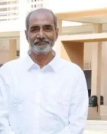
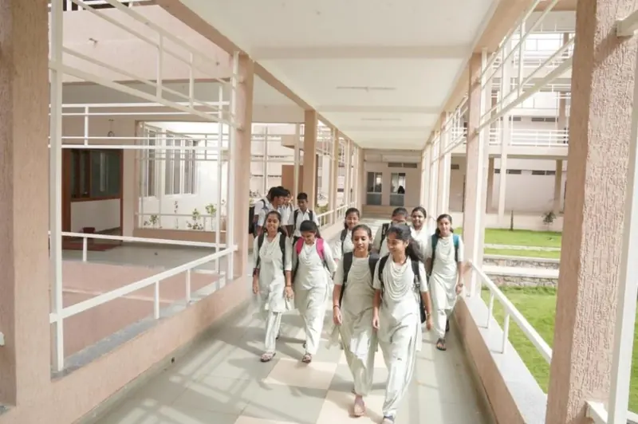
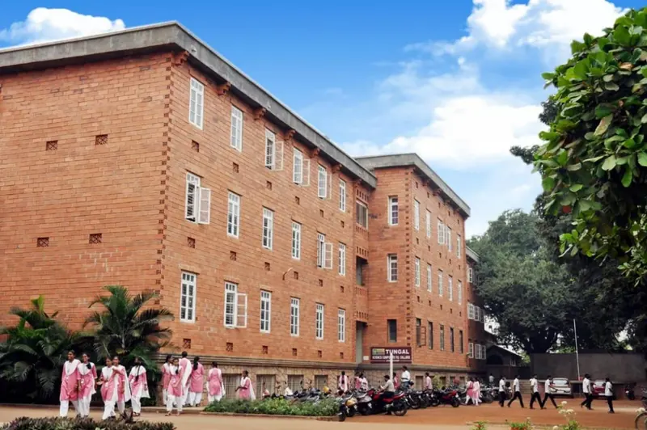
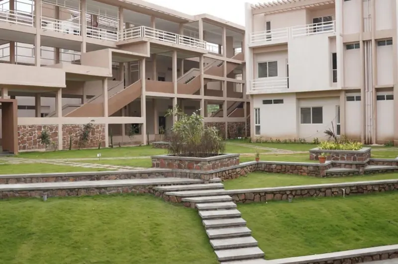
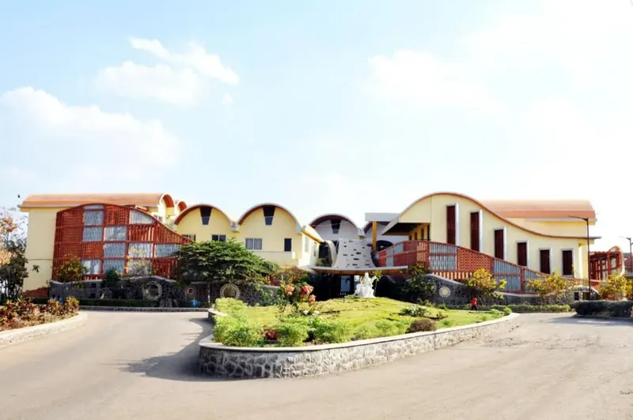
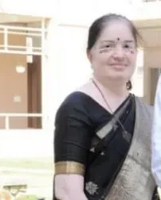
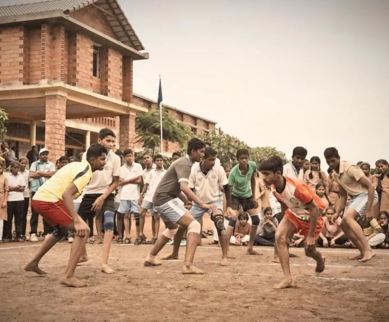
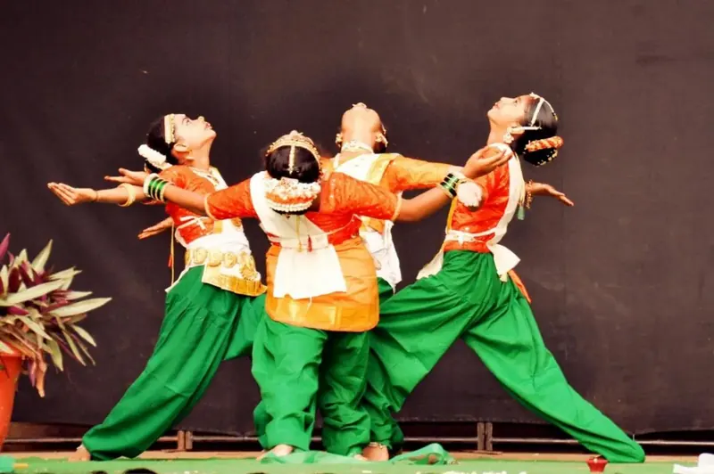

Mr. Ashok Tungal
Director
A passionate visionary from Jamkhandi, Mr. Ashok Tungal, stands as the driving force behind Tungal Institutions, guiding its mission to deliver quality education with commitment, care and affordable cost.

Academic excellence
Known for consistently good results, Tungal Schools combine strong academic rigour with extracurricular opportunities.
About Us · 25-year legacy
Tungal Schools, with campuses across North Karnataka in Jamkhandi, Hulyal, Bagalkot and Vijayapura, is committed to nurturing confident, well-rounded students. The institutions are run by the Shri K K Tungal Memorial Trust (R), Jamkhandi.
“The general aim and objectives of education is to cater to the all-round development of the individual. Education must not only enrich and develop the individual but must help him to become a useful and productive member of society.”
The development of the spiritual, physical, mental and emotional well-being of the pupils.
The power of clear thinking, a scientific temper and a rational way of thinking.
Creative talents and interests, the aesthetic sense, and encouragement for self-expression.
Preparing pupils to earn a living and to become self-sufficient.
Academic ecosystem
Five learning pathways across our four campuses. Each card shows exactly where the programme is offered.
Montessori to Standard V, with a Montessori stream and the Karnataka State curriculum.
Offered at

Up to Standard V on the State curriculum at Jamkhandi; Standard VI to X on the CBSE curriculum at Hulyal and Vijayapura.
Offered at

A two-year integrated course designed to provide intense and rigorous training for Board examinations as well as competitive examinations.
PCMB · PCMC · PCMS · PCME (Jamkhandi combinations)
Offered at

KCET, NEET and IIT-JEE preparation at Jamkhandi; KCET, NEET and IIT-JEE Advanced preparation at Hulyal, Bagalkot and Vijayapura.
Offered at

B.Sc and BCA, affiliated with Bagalkot University, Jamkhandi.
Offered at
Four campus experience
Our widest range: from Montessori to a degree, on one campus.
Kudachi Road, Jamkhandi, Karnataka 587301 · PUC 08353 223900 · School 94836 14803
Explore Jamkhandi campus
CBSE middle and high school, PU Science, and residential life for PU students.
Near Shambhuling Math, Mudhol Road, Jamkhandi, Karnataka 587301
Explore Hulyal campus
A dedicated PU Science campus with hostels for boys and girls.
Road number 16J, Hubli APMC bypass road, Unit 2, Navanagar, Bagalkote 587102 · PUC 90085 91232
Explore Bagalkot campus
CBSE middle and high school, PU Science, and residential life for PU students.
Dargah Road, Ittangihal, Vijayapura, Karnataka 586104 · PUC 89510 51860 · School 99016 18676
Explore Vijayapura campus| Programme | Jamkhandi | Hulyal | Bagalkot | Vijayapura |
|---|---|---|---|---|
| Montessori to Std V | Yes | No | No | No |
| Std VI to X (CBSE) | No | Yes | No | Yes |
| PU Science | Yes | Yes | Yes | Yes |
| KCET · NEET · IIT-JEE | Yes | Yes · Advanced | Yes · Advanced | Yes · Advanced |
| B.Sc · BCA | Yes | No | No | No |
| Hostel (boys & girls) | No | PUC only | Yes | PUC only |
Directors' Talk

Director
A passionate visionary from Jamkhandi, Mr. Ashok Tungal, stands as the driving force behind Tungal Institutions, guiding its mission to deliver quality education with commitment, care and affordable cost.

Director
Mrs. Laxmi Tungal is a dedicated doctor whose fierce and inspiring spirit shines through both her gynaecology practice, cultural traits and academic pursuits — managing with equal enthusiasm and excellence.
Why Tungal
Twenty-five years of nurturing young minds, run by the Shri K K Tungal Memorial Trust (R), Jamkhandi.
Caring faculty who guide students academically and personally.
PU Science at every campus is paired with KCET, NEET and IIT-JEE preparation, with IIT-JEE Advanced preparation at Hulyal, Bagalkot and Vijayapura.
Strong academic rigour combined with extracurricular opportunities, and a focus on the spiritual, physical, mental and emotional well-being of every pupil.
Each centre offers a calm, disciplined study environment and modern classrooms.
Hostel facilities for boys and girls at Bagalkot, and for PU students at Hulyal and Vijayapura.
Student life & campus experiences
Classrooms and laboratories, playing fields and stages: the everyday life of a Tungal student.




Achievements & academic excellence
From the results published by Tungal Science PU Colleges, Jamkhandi & Hulyal.
2025 · IIT selections · Jamkhandi & Hulyal
4
2025 · Medical selections
43MBBS
34BAMS
9BDS
2025 · Engineering selections
367
RVCE 6 · VIT 2 · PES 6 · MSRIT 11 · BMS 15 · SJCE 2 · UVCE 11 · BIT 11 · DCE 19 · BVB 35
Alumni
2015 P.U.C batch. 14th rank in the IFS examination.
All results, 2022 to 2025Parents, students & alumni
We are gathering stories from Tungal parents, students and alumni. If Tungal shaped your journey, we would love to hear from you.
Share your storyAdmissions
Use the form to tell us which campus and programme you are interested in.
The campus office receives your details and gets in touch with you.
See the classrooms and facilities, and meet the team before you decide.